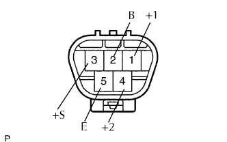
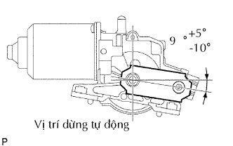

MÔTƠ VÀ THANH NỐI GẠT NƯỚC TRƯỚC > KIỂM TRA |
| 1. KIỂM TRA CỤM MÔTƠ RỬA KÍNH CHẮN GIÓ |
|  |
Kiểm tra hoạt động LO.
Nối cực dương (+) ắc quy vào cực 1 (+) và cực âm (+1) ắc quy vào cực 5 (E), và kiểm tra rằng môtơ hoạt động ở chế độ tốc độ thấp (LO).
Kiểm tra hoạt động HI.
Nối cực dương (+) ắc quy vào cực 4 (+2) và cực âm ắc quy vào cực 5 (E), và kiểm tra rằng môtơ hoạt động ở chế độ tốc độ cao (HI).
Kiểm tra hoạt động dừng tự động.
Nối cực dương (+) ắc quy vào cực 1 (+1) và cực âm (-) ắc quy vào cực 5 (E). Với môtơ đang quay ở tốc độ thấp (LO), tháo cực ra khỏi cực 1 (+1) để dừng hoạt động của môtơ gạt nước ở bất kỳ vị trí nào so với vị trí dừng tự động.
Dùng SST, nối các cực 3 (S) và 1 (+1) Sau đó nối cực dương (+) ắc quy vào cực 2 (B) để khởi động lại hoạt động của môtơ với tốc độ thấp (LO).
|  |
Kiểm tra rằng môtơ tự động ngừng ở vị trí ngừng tự động.